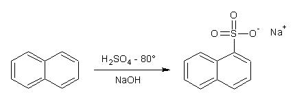
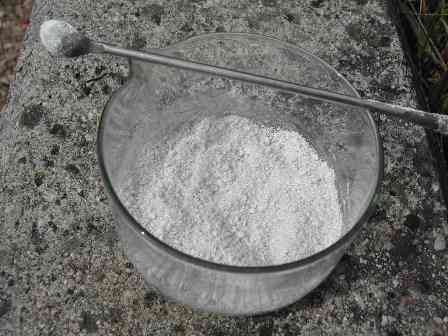
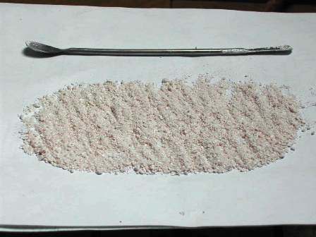

Bando alle ciance, oggi lo chef ha un raptus hard e propone a tutti i commensali un piatto di chimicaccia da stomaco buono:
il 2-naftalensolfonato sodico.
E' come un piatto di fagioli col lardo: o piace o non piace, senza tanti sofismi.
(In realtà lo chef non è così grossolano, ma ha un remoto secondo fine: l'idea di tentare di trasformarlo in futuro in qualcosa di più sfizioso: il beta-naftolo... ma se ne riparlerà).

Veniamo subito al sodo, ecco cosa occorre:
- naftalene C10H8
- acido solforico
- sodio idrossido
- sodio cloruro
- vetreria opportuna
- in un pallone a due colli da 250 ml con applicato imbuto separatore e termometro che tocca quasi il fondo, introdurre 50 g di naftalina finemente macinata e riscaldare prima fino a fusione (80°) e poi piano piano fino a raggiungere la T di 160° (tolleranza di più o meno 5 gradi).
Dall'imbuto separatore far gocciolare lentamente, sempre agitando e in circa 5 minuti, 45 ml di H2SO4 conc., controllando che la temperatura si mantenga nel range previsto.
La miscela scurisce notevolmente; cessare il riscaldamento e tenerla in agitazione per altri 5 minuti.
[Non ho immagini per queste prime fasi].
Lasciar raffreddare e versare il prodotto in un becker da un litro contenente 500 ml di acqua, mescolando.
Se la solfonazione è stata corretta non si deve avere separazione di naftalina indecomposta ma tutto si deve sciogliere perfettamente (rimane una opalescenza dovuta ad una piccola quantità di 2-dinaftilsulfone C10H7-SO2-C10H7) insolubile).
Portare poco sotto l'ebollizione e neutralizzare la soluzione con NaOH al 20%; siccome c'è H2SO4 in eccesso ne serve una buona quantità e verso la fine procedere molto lentamente, senza far diventare basica la soluzione.
Portare all'ebollizione e se non si ha soluzione completa aggiungere lentamente acqua bollente fino ad avere una soluzione leggermente scura ma perfettamente limpida.
 Lasciando raffreddare si ha abbondantissima separazione di 2-naftalensulfonato sodico, che essendo leggero e voluminoso fa quasi solidificare tutta la massa.
Lasciando raffreddare si ha abbondantissima separazione di 2-naftalensulfonato sodico, che essendo leggero e voluminoso fa quasi solidificare tutta la massa.
Filtrare su buchner (se è piccolo farlo in più passaggi) spremendo bene il prodotto, che rilascia l'acqua molto facilmente.
Ricristallizzare il prodotto come segue: preparare circa un litro di soluzione di NaCl al 10% ed in 500 ml di questa portata all'ebollizione sciogliere il prodotto mescolando energicamente; se non si scioglie tutto aggiungere ancora dell'acqua salata bollente, fino ad avere anche questa volta una soluzione limpida.
Filtrare come sopra, spremere il pù possibile e lavare appena appena con acqua ghiacciata e poi lasciar seccare all'aria.
La sintesi è abbastanza facile (ma attenzione alla T°!); rispettando le condizioni operative si riesce a rendere minima la solfonazione in posizione alfa (l'1-naftalensulfonato è più critico da fare) e non occorre alla fine separare gli isomeri.
La purificazione è discretamente lunga ma porta ad una buona quantità di prodotto e una volta tanto il costo è minimo (resa circa 55 g).

Ricordo che la vera naftalina non è più usata come antitarme da tantissimo tempo; è stata sostituita dal 1-4-diclorobenzene Cl-C6H4-Cl il quale a sua volta è stato sostituito dalla molto più gradevole canfora C10H16O
That's all folks! Non è il caso di dire buon appetito... a meno che non ci sia in giro qualcuno che si chiama Eta Beta.